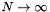

The weights of the estimators (move value, RAVE value) are chosen by assuming that the estimators are uncorrelated and modeling the mean squared error of estimator  by a function that depends on the number of samples and parameter constants, which represent the variance and bias of the estimator and need to be determined experimentally:
by a function that depends on the number of samples and parameter constants, which represent the variance and bias of the estimator and need to be determined experimentally:
Note that this formula is nearly equivalent to the formula suggested by David Silver on the Computer Go mailing list for the case of two estimators (move value and RAVE value) and used in newer versions of MoGo. However, MoGo uses the measured variance of the current RAVE value (for both the move weight and RAVE weight) instead variance parameter constants.
The formula is then reformulated to use different constants that describe the initial steepness and final asymptotic value of the unnormalized weight:
with:
- sample count of the estimator
- Initial weight parameter; this is they weight if and
- Final weight parameter; this is they weight if 
For the move value, , and the variance can become part of the normalization constant, so the weight is simply . If no estimator has a sample count yet, the first-play-urgency parameter is used for the value estimate.